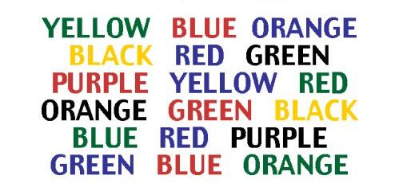
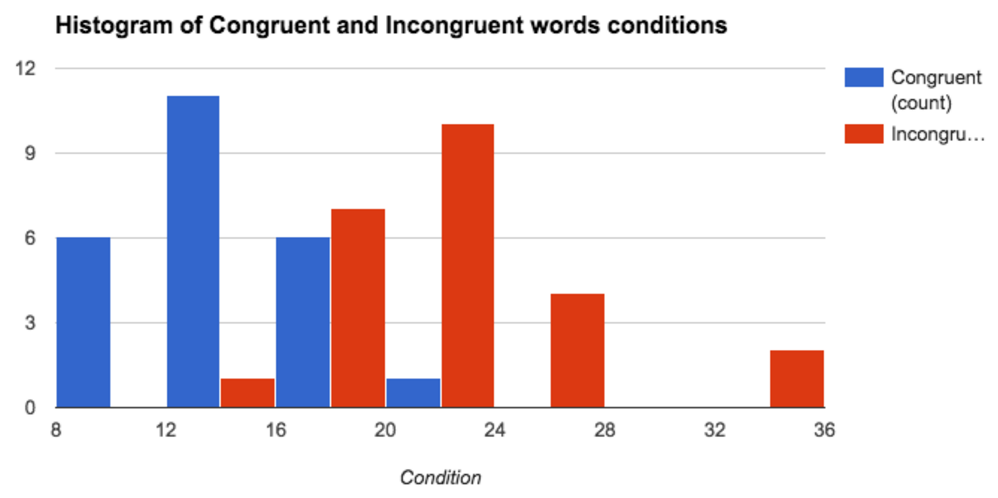

Summary¶
In psychology, the Stroop effect is a demonstration of interference in the reaction time of a task. When the name of a color (e.g., "blue", "green", or "red") is printed in a color not denoted by the name (e.g., the word "red" printed in blue ink instead of red ink), naming the color of the word takes longer and is more prone to errors than when the color of the ink matches the name of the color.[1] I have a doubt that incongruent word condition cause larger response delay. To clarify, I’m going to analyse the proposed data set, which contains repeated measures of the participant’s performance on the congruent and incongruent task.
Investigation¶
The effect is named after John Ridley Stroop, who first published the effect in English in 1935.[1] The effect had previously been published in Germany in 1929.[2] The original paper has been one of the most cited papers in the history of experimental psychology.[3] The effect has been used to create a psychological test (Stroop test) that is widely used in clinical practice and investigation and became the ‘’gold Standard’’ of attentional measures.[4]
In a Stroop task, participants are presented with a list of words, with each word displayed in a color of ink. The participant’s task is to say out loud the color of the ink in which the word is printed. The task has two conditions: a congruent words condition, and an incongruent words condition. In the congruent words condition, the words being displayed are color words whose names match the colors in which they are printed: for example RED, BLUE. In the incongruent words condition, the words displayed are color words whose names do not match the colors in which they are printed: for example PURPLE, ORANGE. In each case, we measure the time it takes to name the ink colors in equally-sized lists. Each participant will go through and record a time from each condition.
Independent and dependent variables¶
The condition - a congruent words condition and an incongruent words condition - is our independent variable. The performance of the participant is our dependent variable. The operational definition of the performance is the time it takes to name the ink colors in equally-sized lists
Appropriate set of hypotheses for this task and statistical test¶
The dependent t test for paired samples provides a good way to perform our task.
To be able to use this test, the sample size should be at least 30 or difference distribution should be normal. First I plot the histogram of difference distribution:

As the histogram doesn’t look normal, I use function normaltest in scipy to validate if the distribution is normal. The result p value is 0.023 which is significant for 𝞪 < 0.05. This justifies the use of a t test. I perform a one-tailed test with sample size n = 24 and degrees of freedom df = 23. My null hypothesis here is that the mean of congruent words condition distribution is not less than the mean of incongruent words condition distribution and alternative hypothesis is that the mean of congruent words condition distribution is less than the mean of incongruent words condition distribution:
Descriptive statistics¶
Measures of central tendency: Mean values: xcwc = 14.05, xicwc = 22.02 Median values: xcwc = 14.36, xicwc = 21.02 Measures of variability: Variances: σ2cwc = 12.67, σ2icwc = 23.01 Standard deviations: Scwc = 3.56, Sicwc = 4.80
Below are the histograms for congruent and incongruent words conditions. 
From the Histogram we see that the data is reasonably symmetric with a small positive skewness.
Dependent t-test for paired samples¶
I perform a one-tailed test with sample size n = 24 and degrees of freedom df = 23.
For 𝞪 = 0.05 t critical is -1.714.
Our point estimate for 𝞵cwc - 𝞵icwc is based on our samples and equal to -7.97.
Sample standard deviation of the differences S = 4.86, t = -8.02 => p<0.05
Since t statistical value is passed the t critical value, we will reject the null. This means that participants have significantly lower response delay on the congruent words condition test rather than incongruent words condition test.
Meaningfulness of the results: the results are meaningful in psychology.
Let’s calculate the effect size - Cohen’s d = -1.64 - means of our samples are 1.64 standard deviation apart.
r2= .74 ≈ 74% - 74% of response delay is due to the condition.
Confidence interval = (-9.67, -6.26) - Participant have from 9 to 6 seconds less response delay on congruent words condition rather incongruent words condition.
Now I’m confident that incongruent word condition cause larger response delay.
I think the fact of how strong the associations of color and text in the brain is responsible for the effect observed. One of the similar task with the same effect is to show number of words and ask participant to say how many words does he see. The congruent condition would be any words (f.ex. Python, Science, Sun) and incongruent condition would be to show numbers written as words (one, one, one).
References¶
- Stroop, John Ridley (1935). "Studies of interference in serial verbal reactions".Journal of Experimental Psychology 18 (6): 643–662. doi:10.1037/h0054651. Retrieved2008-10-08.
- Jaensch, E.R (1929). Grundformen menschlichen Seins. Berlin: Otto Elsner.
- MacLeod CM (March 1991). "Half a century of research on the Stroop effect: an integrative review". Psychological Bulletin 109 (2): 163–203. doi:10.1037/0033-2909.109.2.163. PMID 2034749.(registration required)
- MacLeod C. M. (1992) The Stroop Task: The ‘’gold Standard’’ of attentional measures. // Journal of Experimental Psychology: General, Vol. 121, No. 1, pp. 12-14.
Comments
comments powered by Disqus